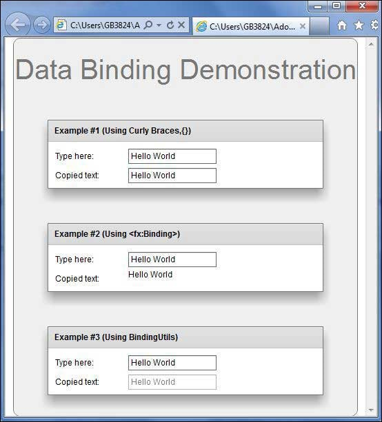

Flex - Data Binding¶
What is Data Binding?¶
Data Binding is a process in which data of one object is tied to another object. It requires a source property, a destination property and a triggering event which indicates, when to copy the data from source to destination.
Flex provides three ways to do Data Binding as below
Curly brace syntax in MXML Script ({})
<fx:binding> tag in MXML
BindingUtils in ActionScript
Data Binding – Using Curly Braces in MXML¶
The following example demonstrates how to use curly braces to specify data binding of a source to destination.
<s:TextInput id = "txtInput1" />
<s:TextInput id = "txtInput2" text = "{txtInput1.text}" />
Data Binding – Using <fx:Binding> tag in MXML¶
The following example demonstrates how to use tag to specify data binding of a source to destination.
<fx:Binding source = "txtInput1.text" destination = "txtInput2.text" />
<s:TextInput id = "txtInput1" />
<s:TextInput id = "txtInput2" />
Data Binding – Using BindingUtils in ActionScript¶
The following example demonstrates how to use BindingUtils to specify data binding of a source to destination.
<fx:Script>
<![CDATA[
import mx.binding.utils.BindingUtils;
import mx.events.FlexEvent;
protected function txtInput2_preinitializeHandler(event:FlexEvent):void {
BindingUtils.bindProperty(txtInput2,"text",txtInput1, "text");
}
]]>
</fx:Script>
<s:TextInput id = "txtInput1" />
<s:TextInput id = "txtInput2" preinitialize = "txtInput2_preinitializeHandler(event)" />
Flex Data Binding Example¶
Let us follow the steps given below to see skinning in action in a Flex application by creating a test application −
Create a project with a name HelloWorld under a packagecom.tutorialspoint.client as explained in the Flex - Create Application chapter.
Modify HelloWorld.mxml as explained below. Keep rest of the files unchanged.
Compile and run the application to make sure business logic is working as per the requirements.
Following is the content of the modified HelloWorld.mxml filesrc/com/tutorialspoint/client/HelloWorld.mxml.
<?xml version = "1.0" encoding = "utf-8"?>
<s:Application xmlns:fx = "http://ns.adobe.com/mxml/2009"
xmlns:s = "library://ns.adobe.com/flex/spark"
xmlns:mx = "library://ns.adobe.com/flex/mx
width = "100%" height = "100%" minWidth = "500" minHeight = "500">
<fx:Style source = "/com/tutorialspoint/client/Style.css" />
<fx:Script>
<![CDATA[
import mx.binding.utils.BindingUtils;
import mx.events.FlexEvent;
protected function txtInput6_preinitializeHandler(event:FlexEvent):void {
BindingUtils.bindProperty(txtInput6,"text",txtInput5, "text");
}
]]>
</fx:Script>
<fx:Binding source = "txtInput3.text" destination = "txtInput4.text" />
<s:BorderContainer width = "500" height = "550" id = "mainContainer"
styleName = "container">
<s:VGroup width = "100%" height = "100%" gap = "50" horizontalAlign = "center"
verticalAlign = "middle">
<s:Label id = "lblHeader" text = "Data Binding Demonstration"
fontSize = "40" color = "0x777777" styleName = "heading" />
<s:Panel title = "Example #1 (Using Curly Braces,\{\})" width = "400"
height = "100" >
<s:layout>
<s:VerticalLayout paddingTop = "10" paddingLeft = "10" />
</s:layout>
<s:HGroup >
<s:Label text = "Type here: " width = "100" paddingTop = "6" />
<s:TextInput id = "txtInput1" />
</s:HGroup>
<s:HGroup >
<s:Label text = "Copied text: " width = "100" paddingTop = "6" />
<s:TextInput id = "txtInput2" text = "{txtInput1.text}" />
</s:HGroup>
</s:Panel>
<s:Panel title = "Example #2 (Using <fx:Binding>)" width = "400"
height = "100" >
<s:layout>
<s:VerticalLayout paddingTop = "10" paddingLeft = "10" />
</s:layout>
<s:HGroup >
<s:Label text = "Type here: " width = "100" paddingTop = "6" />
<s:TextInput id = "txtInput3" />
</s:HGroup>
<s:HGroup >
<s:Label text = "Copied text: " width = "100" paddingTop = "6" />
<s:Label id = "txtInput4" />
</s:HGroup>
</s:Panel>
<s:Panel title = "Example #3 (Using BindingUtils)" width = "400"
height = "100" >
<s:layout>
<s:VerticalLayout paddingTop = "10" paddingLeft = "10" />
</s:layout>
<s:HGroup >
<s:Label text = "Type here: " width = "100" paddingTop = "6" />
<s:TextInput id = "txtInput5" />
</s:HGroup>
<s:HGroup >
<s:Label text = "Copied text: " width = "100" paddingTop = "6" />
<s:TextInput enabled = "false" id = "txtInput6"
preinitialize = "txtInput6_preinitializeHandler(event)" />
</s:HGroup>
</s:Panel>
</s:VGroup>
</s:BorderContainer>
</s:Application>
Once you are ready with all the changes done, let us compile and run the application in normal mode as we did in Flex - Create Application chapter. If everything is fine with your application, it will produce the following result: [ Try it online ]
